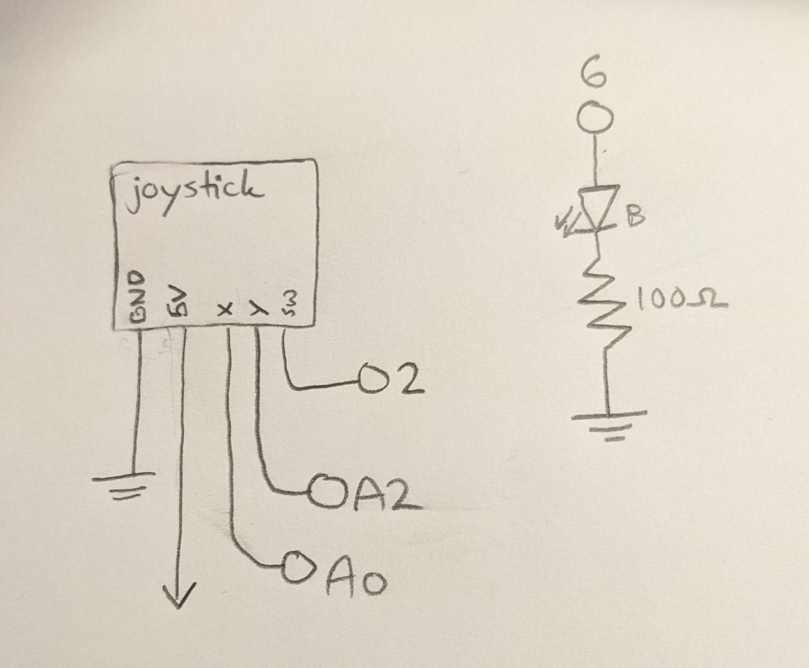
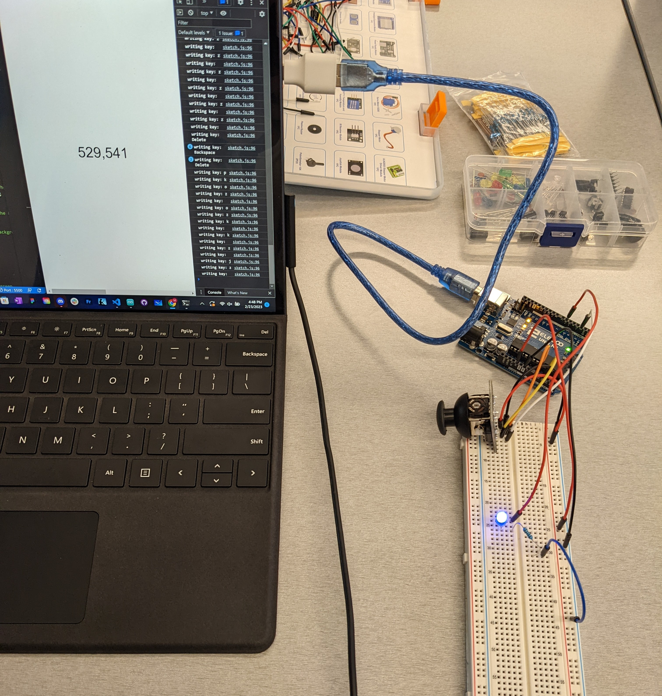
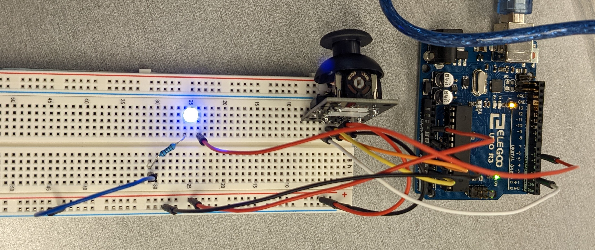

A joystick is used as the input device, and a blue LED is used as the output device on the Arduino side. A blue LED uses 3.3V of voltage, so the resistor needs to be at least 85Ω to ensure a safe current of 20mA (5V - 3.3V = .02A * 85Ω). I used a 100Ω resistor for simplicity.
Circuit in Action

The Arduino uses serial communication to talk with a web page.

This is a closer look at the wiring of the physical components. The joystick's X and Y pins are connected to analog input pins for analogRead(), and the LED is connected to a PWM-capable GPIO pin for analogWrite().The web page displays the numeric position of the joystick, and its text color changes based on the values. The numbers shown range from 0 to 1023 because that is the range of analogRead(). When the joystick is at rest in the middle, the values are around 500-550.The blue LED is controlled by the web page. Pressing the spacebar on the web page turns the LED off, while pressing the 'b' key turns it 100% on. Pressing any other key will write the ASCII value of its character to the LED with analogWrite(), so other keys will cause the LED to have varying brightnesses.
/*
File: WebTalks.ino
Author: Max Coppock
with help from class code examples of Serial.available() and Serial.read()
*/
void setup() {
//start serial monitoring, crucial step
Serial.begin(9600);
}
void loop() {
//SENDING JOYSTICK MESSAGE:
//x direction read from the joystick
int readingX = analogRead(A0);
//y read from the joystick
int readingY = analogRead(A2);
//use serial.print to send data to the web page in [x,y] format
Serial.print("[");
Serial.print(readingX);
Serial.print(",");
Serial.print(readingY);
//last one has a '\n' to signal the end of a line for serial.readLine()
// on the web end
Serial.println("]");
//sending about 10 joystick updates every second
delay(100);
//RECEIVING LED MESSAGE:
//if the serial line isn't busy
if (Serial.available()) {
//read in serial communication, save it as an int to inByte
int inByte = Serial.read();
//send it back as binary data to check
Serial.write(inByte);
//constrain the key command in case its ascii value is outside the range
// of analogWrite()
inByte = constrain(inByte, 0, 255);
//user hit the spacebar
// 32 is ascii value for Space
if(inByte == 32){
//turn LED off
analogWrite(6, 0);
//user hit another key
}else {
//hit b key: 98 = 'b' in ASCII
if(inByte == 98){
//turn LED fully on
analogWrite(6, 255);
//not space or b key
} else {
//set LED brightness with the ASCII value of the key pressed
analogWrite(6, inByte);
}
}
}
}
//variable to store serialport library
var serial;
//my port name is COM8
var portName = 'COM8';
//array to store data coming in over serial
var dataarray = [];
function setup() {
//new instance of serialport library saved to serial
serial = new p5.SerialPort();
//define callback functions for the following events:
serial.on('list', printList); // set a callback function for the serialport list event
serial.on('connected', serverConnected); // callback for connecting to the server
serial.on('open', portOpen); // callback for the port opening
serial.on('data', serialEvent); // callback for when new data arrives
serial.on('error', serialError); // callback for errors
serial.on('close', portClose); // callback for the port closing
//list the serial port options
serial.list();
//open the port with the Arduino on it
serial.open(portName);
//create a p5js canvas on the page
createCanvas(1200, 800);
//set white background
background(255);
}
//The callback functions here are class code, helpful to track what's going on with the serial line
// get the list of ports:
function printList(portList) {
// portList is an array of serial port names
for (var i = 0; i < portList.length; i++) {
// Display the list the console:
print(i + " " + portList[i]);
}
}
//console feedback: connected
function serverConnected() {
print('connected to server.');
}
//console feedback: port opened
function portOpen() {
print('the serial port opened.')
}
//console feedback: error
function serialError(err) {
print('Something went wrong with the serial port. ' + err);
}
//console feedback: port closed
function portClose() {
print('The serial port closed.');
}
//new data has come in over serial
function serialEvent() {
//if serial is available
if (serial.available()) {
//read in the line from the Arduino
var datastring = serial.readLine();
//variable for the json parsed datastring
var newarray;
//try to parse the input, don't crash the program if we can't
try {
//parse datastring as JSON, save to newarray
newarray = JSON.parse(datastring);
//if it's an object like it should be
if (typeof newarray == 'object') {
//assign it to the global dataarray variable
dataarray = newarray;
}
//if we couldn't parse that input
} catch(err) {
// :(
// but it doesn't crash
}
}
}
function draw() {
//clear the text from previous frames
clear();
//center text
textAlign(CENTER);
//size 40 font
textSize(40);
//variables for a red and a green value
let red, green;
//map the dataArray input from the joystickX to red
//turn the range from analogRead 0-1023 to analogWrite 0-255
red = map(dataarray[0], 0, 1023, 0, 255);
//map the dataArray input from joystickY to green
green = map(dataarray[1], 0, 1023, 0, 255);
//set our text color to use the red and green variables
fill(red, green, 50);
//write the text to the window
text(dataarray, windowWidth/2, windowHeight/2);
}
//when any key is pressed
function keyPressed(){
//log the key so I know this event fires
console.log("writing key: " + key);
//send the ascii value of that key back over the serial
serial.write(key);
}